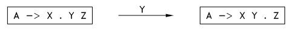
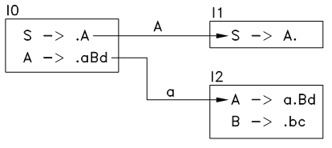
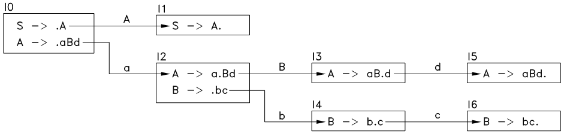

第 09 章中，介绍了自底向上分析的基本方法和思路，自底向上分析的就是从给定的句子开始，不断的挑选出合适的产生式，将中间句子中的子串折叠为非终结符，最终折叠到起始符号。所以此方法的关键字为 折叠 ，难点在于如何挑选出合适的产生式，将最终句子折叠到起始符号。
自底向上分析法的解析力量比自顶向下分析法要强大的多，和自顶向下分析法相比，它可以解析更为复杂、更为广泛的语法。但自底向上分析法的构造过程也复杂的多，上一章中介绍的 LL(1) 法程序的手写难度不大，但自底向上分析法程序的手写难度却相当之大。幸运的是，目前有一些非常强大的分析器构造工具（如 bison ），可以将用户定义的语法规则转化成一个自底向上分析器，使得编写语法分析器变得非常简单。
本章和下一章将介绍典型的自底向上分析法——LR 分析法——的基本方法和步骤，然后在下下一章介绍如何使用 bison 来生成语法分析器。
为了解释什么是 LR 法，首先来看一个简单的例子，语法为：
S –> E
E –> T
E -> E + T
T –> id
T -> ( E )
要解析的句子为 (id + id) 。根据观察，可知其折叠过程为：
(id + id) => (T + id) => (E + id) => (E + T) => (E) => T => E => S
^^ ^ ^^ ^^^^^ ^^^ ^ ^
T->id E->T T->id E->E + T T->(E) E->T S->E
每一步的折叠部位和应用的产生式都标注在上面了。
下面，还是一步一步的跟踪整个过程，查看每一步是如何挑选出需要的产生式来的。
首先，最开始的中间句子为 (id + id) ，要使它发生折叠，只有当它的有子串可以与某一个产生式的右边匹配才有可能。将 (id+id) 和所有产生式的右边 E, T, E+T, id, (E) 进行比较，发现只有 id 能匹配上，但是 (id+id) 中有两处匹配上的子串，此处只选择最左边的那个，将此子串进行折叠，得到 T + id ，如下列表，下表中将中间句子和所有产生式都写到同一行，并加粗标出了最左边的匹配子串和相应的产生式：
| Working-string | Productions | |
|---|---|---|
| ( id + id ) | S –> E ; E –> T ; E -> E + T ; T –> id ; T -> ( E ) | |
| ( T + id ) |
再将此时的中间句子 T + id 与 E, T, E + T, id, (E) 进行比较，找到了两个匹配的子串，还是只选择最左边的，也就是 T ，将其折叠为 E 后，得到 (E+id) ，如下：
| Working-string | Productions | |
|---|---|---|
| ( id + id ) | S –> E ; E –> T ; E -> E + T ; T –> id ; T -> ( E ) | |
| ( T + id ) | S –> E ; E –> T ; E -> E + T ; T –> id ; T -> ( E ) | |
| ( E + id ) |
到了这里，情况就变得复杂了，此时的中间句子 (E+id) 可以和产生式 S->E, T->id 匹配上，那还是选择最左边的匹配子串吗？也就是折叠成 (S+id) ？不行，因为这样后面无论如何也无法折叠到 S 了。因此这里只能选择后面的 id 来折叠，折叠后得到 (E+T) ：
| Working-string | Productions | |
|---|---|---|
| ( id + id ) | S –> E ; E –> T ; E -> E + T ; T –> id ; T -> ( E ) | |
| ( T + id ) | S –> E ; E –> T ; E -> E + T ; T –> id ; T -> ( E ) | |
| ( E + id ) | S –> E ; E –> T ; E -> E + T ; T –> id ; T -> ( E ) | |
| ( E + T ) |
按以上原则，继续折叠，过程如下，每一步都加粗显示了中间句子中的、和某一个产生式的右边匹配的子串：
| Working-string | Productions | |
|---|---|---|
| ( id + id ) | S –> E ; E –> T ; E -> E + T ; T –> id ; T -> ( E ) | |
| ( T + id ) | S –> E ; E –> T ; E -> E + T ; T –> id ; T -> ( E ) | |
| ( E + id ) | S –> E ; E –> T ; E -> E + T ; T –> id ; T -> ( E ) | |
| ( E + T ) | S –> E ; E –> T ; E -> E + T ; T –> id ; T -> ( E ) | |
| ( E ) | S –> E ; E –> T ; E -> E + T ; T –> id ; T -> ( E ) | |
| T | S –> E ; E –> T ; E -> E + T ; T –> id ; T -> ( E ) | |
| E | S –> E ; E –> T ; E -> E + T ; T –> id ; T -> ( E ) | |
| S |
从以上可以看出 LR 分析法的复杂性，每个折叠步中，中间句子可能有好几个子串可以和某个产生式的右边匹配上，也就是说可以采取好几个不同方式进行折叠，但怎么挑选折叠方式却暂时没有明确的法则。在进一步讨论这个问题之前，先把上面的这个折叠过程改一下，改成一个基于栈和输入流的分析过程，按以下原则进行：
（1） 起始状态：栈内无任何符号，可以认为栈上是一个空串。
（2） 每个分析步：如果栈上的符号串不可折叠，则从输入流中读入一个符号，放到栈上的符号串的最后；否则，折叠此符号串，将需折叠的子串的所有符号出栈，并将折叠得到的非终结符放到栈的末尾。
具体流程如下表，表中的 shift 动作表示 “从输入流中读入一个符号，并放到栈顶（符号串的末尾）” ， reduce 动作表示一个折叠动作， $ 表示结束符 EOF 。
| Parse Stack | Remaining Input | Parse Action | ||
|---|---|---|---|---|
| ( id + id ) $ | shift ( | |||
| ( | id + id ) $ | shift id | ||
| ( id | + id ) $ | reduce T –> id | ||
| ( T | + id ) $ | reduce E –> T | ||
| ( E | + id ) $ | shift + | ||
| ( E + | id ) $ | shift id | ||
| ( E + id | ) $ | reduce T -> id | ||
| ( E + T | ) $ | reduce E -> E + T | ||
| ( E | ) $ | shift ) | ||
| ( E ) | $ | reduce T -> ( E ) | ||
| T | $ | reduce E -> T | ||
| E | $ | reduce S -> E | ||
| S | $ | ACCEPT |
从以上过程可以看出，每次折叠栈上的符号串的时候，一定是对其后缀（右子串）进行折叠，即发生的折叠一定是这样的情况：栈上的符号串为 uv 、应用的产生式为 A -> v 、折叠后栈上的符号串为 uA ，而不可能发生这样的情况：栈上的符号串为 uvw （w不是空串）、应用的产生式为 A -> v 、折叠后栈上的符号串为 uAw （因为如果存在这样的折叠，那早已在前面的分析步中折叠过了）。
这就是 LR 分析法的命名原因，第一个 L 表示从左向右扫描输入流，第二个 R 表示每次折叠一定发生在栈上符号串的最右边。
上面的流程中，最重要的几个问题仍然没有说清楚，那就是： 栈上的符号串不可折叠是什么意思？什么样的符号串可折叠？怎么找出可行的折叠？如果有多个可行的折叠怎么办？
为了回答第一、二个问题，先介绍合法符号串和合法前缀等概念：
合法符号串（viable string） ： 如果一个符号串可由起始符号经过有限步展开得到，则称此符号串为合法符号串。
前缀（prefix）、后缀（sufix） ： 一个符号串 X1 X2 ... XN 的前缀有 ε 、X1 、 X1 X2 、 X1 X2 ... Xn ，后缀有 ε 、Xn 、 Xn-1 Xn 、 X1 X2 ... Xn ，本站也称为左子串和右子串。
合法前缀（viable prefix） ：一个符号串如果是语法 G 中的合法符号串的前缀，则称其为合法前缀。
显然，任何时候，栈上的符号串都应该是一个合法前缀。因此，前面描述的流程中，还应该在 shift 动作的时候增加一个检查： shift 之后，栈上的符号串是一个合法前缀。而 reduce 动作之后，栈上的符号串也应该是一个合法前缀。因此， “可折叠” 的定义为：
可折叠的（reduceable） ： 若一个合法前缀 vu 应用产生式 A -> u 进行折叠后的符号串 vA 仍然是合法前缀，则称原符号串 vu 是可折叠的。
至于如何解决第三、四个问题，就不是一件容易的事情了，要找出可行的折叠，先要判断折叠前后的符号串是否是合法前缀，而一个语法 G 可能有无限多个合法前缀，要判断一个符号串是否是合法前缀几乎是和判断一个句子是否符合语法同样困难的事情。为了解决这个问题，需要引入 状态 和 形态 的概念，下一节中介绍这两个概念，同时，介绍如何利用这两个概念来构造 LR 分析表和动作表。注意，本节所描述的分析流程只是一个基本思路，真正的 LR 分析法流程仅仅是在思路和操作方式上有所类似。
LR(0) 分析法是一种最基本的 LR 分析法，其构造过程中的核心是 状态 和 形态 ，以下给出相关术语的正式定义，并介绍如何构造 LR(0) 分析器。
形态（configuration） ： 一个产生式的解析程度，用一个产生式加一个位置黑点来表示，例如，产生式 A -> XYZ 有 4 中可能的解析程度：
A –> •XYZ
A –> X•YZ
A –> XY•Z
A –> XYZ•
位置黑点表示本产生式解析过程中前进到的位置，比如一个产生式: S -> abc ，则它最开始的形态为 S -> •abc ，读入一个 a 后其形态变为 S -> a•bc ，再读入一个 b 后变为 S -> ab•c 。
形态一般用大写字母 C 表示。
需要注意的是，如果一个产生式的右边是空串，如 A -> ε ，那么形态 A -> •ε 和 A -> ε• 是同样的形态，一般都只采用后一种表示方式。
产生式的起始形态（start configuration of a production） ： 位置黑点位于该产生式右边的第一个符号的前面的形态，如： A –> •XYZ 。
产生式的已完成形态（complete configuration of a production） ： 位置黑点位于该产生式右边的最后一个符号的后面的形态，如： A –> XYZ• 。也称为 可折叠形态（reduceable configuration）。
形态的转移 ： 当一个形态 A –> X•YZ 遇到一个符号 Y 时，它就转移到下个形态： A –> XY•Z ，见下图：
图11.1 形态转移示意图
若记 C = [A -> X•YZ] ， C’ = [A –> XY•Z] ，称形态 C’ 为形态 C 遇到符号 Y 时的 后继形态（successor configuration） ，可写为 NEXT(C, Y) 。若形态 C 遇到的符号 X 不等于其位置黑点后面的符号时，称 NEXT(C, X) 不存在。
延伸形态（extended configuration） ：对于形态 A –> v•Yw ，若 Y 为非终结符，且 Y -> u ，则形态 Y -> •u 是形态 A –> v•Yw 的延伸形态，进一步的，若 u 的第一个符号为非终结符 Z ，且 Z -> u1 ，则形态 Z -> •u1 既是 Y -> •u 的延伸形态，也是 A –> v•Yw 的延伸形态。
例如，语法：
S -> Ab
A -> Bc
B -> d
A -> •Bc 和 B -> •d 都是 S -> •AB 的延伸形态。
这里要注意的是： 延伸的方向是单向的 ，上面这个语法中，A -> •Bc 是 S -> •AB 的延伸形态，但 S -> •AB 不是 A -> •Bc 的延伸形态，只有 B -> •d 才是 A -> •Bc 的延伸形态。
形态集合（configurating set） ： 一个由有限个形态组成的集合。
形态集合的闭合（closure of a configurating set） ： 形态集合的闭合就是把这个集合里所有形态的所有延伸形态全部添加进这个集合。按以下步骤进行（设该集合名为 I ）：
（1） 遍历 I ，对 I 中的每一条形态 A -> u • v ，若 v 的第一个符号为非终结符 B ，则将其所有的产生式的起始形态添加进 S ，即若 B -> u1 | u2 | ... | un ，则将 B -> • u1, B -> • u2, ..., B -> • un 添加进 I 。
（2） 重复（1），直到不再出现新的形态。
闭合操作的得到的新集合 I’ 称为原集合 I 的 闭包集合 ，记为 CLOSURE(I) 。
状态（state） ： 进行过闭合操作的形态集合，一般用大写字母 I 表示，也就是说，若形态 C 属于 状态 I ，则 C 的延伸形态也属于 I 。
上下文无关语法的起始状态（start state of a CFG） ： 若一个 CFG 的起始符号 S 的所有产生式为 S -> u1 | u2 | ... | un ，且 S 不位于任何产生式的右边，则其起始状态（记为 I0 ）是这些产生式的起始形态的集合的闭包集合，即：
I0 = CLOSURE( { [S-> • u1], [S-> • u2], ... [S-> • un] } )
例如，语法：
S -> A
A -> aBd
B -> bc
的起始状态 I0 = { [S-> • A], [A-> • aBd] } 。
起始状态可以认为是语法解析的初始状态，此时尚未读入任何符号，因此起始符号的所有产生式都处在其初始形态。
上面提到了，要求 S 不位于任何产生式的右边。如果 S 位于某条产生式的右边，则这个状态可能不能代表语法解析的初始状态。例如，对于语法： S -> a | aS 。当解析句子 aaa 的时候，状态{ [S-> • a], [S-> • aS] }，可能代表 ” • aaa” 的状态，也可能代表 “a • aa” 的状态 （这里的 ” • ” 表示已读入符号和未读入符号的分割位置）。
为了保证起始符号不位于任何产生式的右边，一般在语法中增加一个非终结符 S’ 和一条产生式 S’ -> S ，而用这个 S’ 作为起始符号。如前面这个语法 S -> a | aS 可以改为：
S' -> S
S -> a
S -> aS
此时的状态 { [S’-> • S], [S-> • a], [S-> • aS] } 就只能代表 ” • aaa” 的状态了。
后继状态（succesor state） ： 当状态 I 遇到符号 X 时，可能转移到另一个状态，称此状态为状态 I 遇到符号 X 的后继状态，记为 NEXT(I, X) ，按下式计算：
NEXT(I, X) = CLOSURE( { NEXT(C, X) | C ∈ I } )
NEXT(I, X) 的计算步骤为：
（1） 置 I’ 为空集。
（2） 遍历 I ，对 I 中每一条形态 C ，若 NEXT(C, X) 存在，则将 NEXT(C, X) 加入 I’ 。
（3） 对 I’ 进行闭合操作。
注意，NEXT(I, X) 可能为空集。
下面用一个非常简单的例子来介绍如何使用形态和状态来构造 LR(0) 分析。语法为：
S -> A
A -> aBd
B -> bc
首先，求出该语法的起始状态 I0 ：
I0:
S -> .A
A -> .aBd
对语法中的所有符号 X （S, A, B, a, b, c, d） ，求出 I0 遇到 X 的后继状态 NEXT(I0, X) ，若 NEXT(I0, X) 不是空集，则将其添加到状态转移图中，如下：
图11.2 状态转移图1
按以上方法，不断的生成新的状态，直到不再出现新的状态，最终如下：
图11.3 状态转移图2
显然，解析的最开始的时候，没有读入任何符号，此时的状态为 I0 ，每读入一个符号，则转移到另一个状态。
这个状态转移图似乎和有限状态自动机的运行图很相似，那么，解析的过程是不是就是用有限状态自动机来依照上面那个图来运行一遍？答案是不行的。上一章已经说过了，有限状态自动机只能解析正则语言，无法解析复杂的上下文无关语言。为了解析上下文无关语法，我们需要一种更强大的自动机，这种自动机不仅仅需要记住它当前的状态，还需要记住它的历史路径，记住它是如何到达当前状态的。
简单来说，这种自动机含有一个栈，它的大致的运行机制为：在读入符号之前，将初始状态 I0 压入栈顶，之后，每读入一个符号，它就转移到下一个状态（将下一个状态压入栈顶），当它转移到一个可折叠状态时，它执行一个折叠动作（将前面的一些状态出栈、再压入下一个状态），一直到它折叠得到的非终结符是起始符号，且下一个符号是 $ 时，它才终止运行。
上面这段描述只是一个大致的运行流程，里面有两个重要的问题没讲清楚，一个是 转移 和 折叠 动作的具体操作步骤，另一个什么是 可折叠状态 。
我们先把后一个问题讲清楚：
可折叠状态（reduceable state） ： 只含有一个形态的状态，且此形态为可折叠形态，如图11.3中的 I1 、 I5 和 I6 。
自动机的具体操作流程为：
（1） 将初始状态 I0 压入栈顶；
（2） 读入下一个符号 x ，相当于调用一次 x = yylex() ，有两种情况：
（2.1） x 不是终结符：输入不合语法，执行 deny 操作，终止解析；
（2.2） x 是终结符：转到（3）；
（3） 置 X = x ；
（4） 设栈顶状态为 I ，有以下两种情况：
（4.1） I 不是可折叠状态，有以下三种情况：
（4.1.1） NEXT(I, X) 存在（设为 I’）、 X 为终结符：执行 shift I’ 操作，将 I’ 压入栈顶，转到（2）；
（4.1.2） NEXT(I, X) 存在（设为 I’）、 X 为非终结符：执行 goto I’ 操作，将 I’ 压入栈顶，转到（3）；
（4.1.3） NEXT(I, X) 不存在：输入不合语法，执行 deny 操作，终止解析；
（4.2） I 是可折叠状态，设 I 里面的形态对应的产生式为 A -> X1 X2 ... Xn ，有以下三种情况：
（4.2.1） A != S ：执行 reduce (A, n) 操作，将栈顶及以下 n 个状态出栈，置 X = A ，转到（4）；
（4.2.2） A == S 、 X != $ ：输入不合语法，执行 deny 操作，终止解析；
（4.2.3） A == S 、 X == $ ：输入合法，执行 accept 操作，终止解析。
注意，以上流程只适用于起始符号 S 不在任何产生式的右边的语法。例如，如果有 A -> Sa 这样的产生式时，那么即使折叠得到了 S ，也不代表原句子已经全部折叠完了。
根据以上流程，按状态转移图构造出动作表 M ， M 中的 M[I, X] 表示栈顶状态为 I ，下一个符号为 X 时所应采取的动作，按以下情况确定：
（1） I 不是可折叠状态：
（1.1） NEXT(I, X) 存在（设为 I’）、 X 为终结符： M[I, X] = shift I’ ；
（1.2） NEXT(I, X) 存在（设为 I’）、 X 为非终结符： M[I, X] = goto I’ ；
（1.3） NEXT(I, X) 不存在： M[I, X] = deny ；
（2） I 是可折叠状态、其中的形态对应的产生式为 A -> X1 X2 ... Xn ：
（2.1） A != S： M[I, X] = reduce A -> X1 X2 ... Xn ；
（2.3） A == S、 X != $ ： M[I, X] = deny ；
（2.2） A == S、 X == $ ： M[I, X] = accept 。
按以上步骤以及图11.3，构造出的动作表 M 如下，其中 M[I, X] 为空白的表示 deny 动作：
| A | B | a | b | c | d | $ | |
|---|---|---|---|---|---|---|---|
| I0 | goto I1 | shift I2 | |||||
| I1 | ACCEPT | ||||||
| I2 | goto I3 | shift I4 | |||||
| I3 | shift I5 | ||||||
| I4 | shift I6 | ||||||
| I5 | reduce A -> aBd | ||||||
| I6 | reduce B -> bc | ||||||
构造出动作表后，LR(0) 的具体操作流程为：
（1） 将初始状态 I0 压入栈顶；
（2） 读入一个符号 x ，相当于调用一次 x = yylex() ，有两种情况：
（2.1） x 不是终结符：输入不合语法，执行 deny 操作，终止解析；
（2.2） x 是终结符：转到（3）；
（3） 置 X = x；
（4） 设栈顶状态为 I ，有以下五种情况：
（4.1） M[I, X] 为 shift I’ 动作：执行 shift I’ 操作，将 I’ 压入栈顶，转到（2）；
（4.2） M[I, X] 为 goto I’ 动作：执行 goto I’ 操作，将 I’ 压入栈顶，转到（3）；
（4.3） M[I, X] 为 reduce A-> X1 X2 ... Xn ：执行 reduce(A, n) 操作，将栈顶及以下 n 个状态出栈，置 X = A ，转到（4）；
（4.4） M[I, X] 为 ACCEPT ：输入合法，执行 accept 操作，终止解析；
（4.5） M[I, X] 为空白：输入不合语法，执行 deny 操作，终止解析。
按以上步骤，对句子 “abcd” 进行解析，全过程如下：
| Sym-Stack | State-Stack | X | x Remaining-Input | Parse-Action | |||
|---|---|---|---|---|---|---|---|
| I0 | a | a bcd$ | M[I0,a] = shift I2 | ||||
| a | I0 I2 | b | b cd$ | M[I2,b] = shift I4 | |||
| ab | I0 I2 I4 | c | c d$ | M[I4,c] = shift I6 | |||
| abc | I0 I2 I4 I6 | d | d $ | M[I6,d] = reduce B->bc | |||
| a | I0 I2 | B | d $ | M[I2,B] = goto I3 | |||
| aB | I0 I2 I3 | d | d $ | M[I3,d] = shift I5 | |||
| aBd | I0 I2 I3 I5 | $ | $ | M[I5,$] = reduce A->aBd | |||
| I0 | A | $ | M[I0,A] = goto I1 | ||||
| A | I0 I1 | $ | $ | M[I1,$] = ACCEPT |
上一节中提到，可折叠状态中只含一条形态、且这条形态是可折叠形态，那存不存在这样的状态，里面既有可折叠形态、又有不可折叠形态，或者含多条不同的可折叠形态？即：
（1） 一个状态中，既含有形如 A -> u . v 的形态，也有形如 B -> w . 的形态；
（2） 一个状态中，既含有形如 A -> u . 的形态，也有形如 B -> w . 的形态。
显然，按上一节的定义，上面这两种状态都不是可折叠状态。如果语法分析过程有这种状态怎么办。
上面的第一种状态，会引起 shift/reduce冲突，也就是无法判断出应该 shift ，还是应该 reduce 。而第二种状态，则会引起 reduce/reduce冲突，也就是无法判断出应该采用那条产生式来折叠。
如果一个语法中，从起始状态开始生成的所有状态中，有以上两种状态，则这种语法就不能使用 LR(0) 法来进行分析，这就是 LR(0) 的限制条件。
我们将能使用 LR(0) 法进行分析的语法称为 LR(0) 语法， LR(0) 语法的要求为：
（1） 起始符号 S 不能位于任何产生式的右边；
（2） 从起始状态开始生成的所有状态中，如果一个状态中含有一条可折叠形态，那么这个状态中不能再含有任何其他形态。
到了这里，可以回答本章第一节最后提出来的第三、四个问题了：
怎么找出可行的折叠？ 答案： 利用状态来寻找，当解析到可折叠状态时就可以发生折叠了，折叠应用的产生式就是该状态里面的那个形态的产生式。
如果有多个可行的折叠怎么办？ 答案： 将语法改写为 LR(0) 语法。
上面最后一个问题的答案似乎不是个理想的答案，事实的确如此， LR(0) 语法的限制条件仍然相当之强，改写难度仍然很大，只能适用于简单的语法。我们需要一种更为强大、更为广泛的分析方法。
看起来似乎很令人气馁，我们花了这么大力气构造了一个如此复杂的 LR(0) 分析法，但却几乎不能用。不过，事实上，这个分析法距离我们的最终目标差一步之遥了。下一章中将介绍终极分析法 —— LR(1) 分析法。
第 11 章完
{kind=link}
{kind=link}
{kind=link}